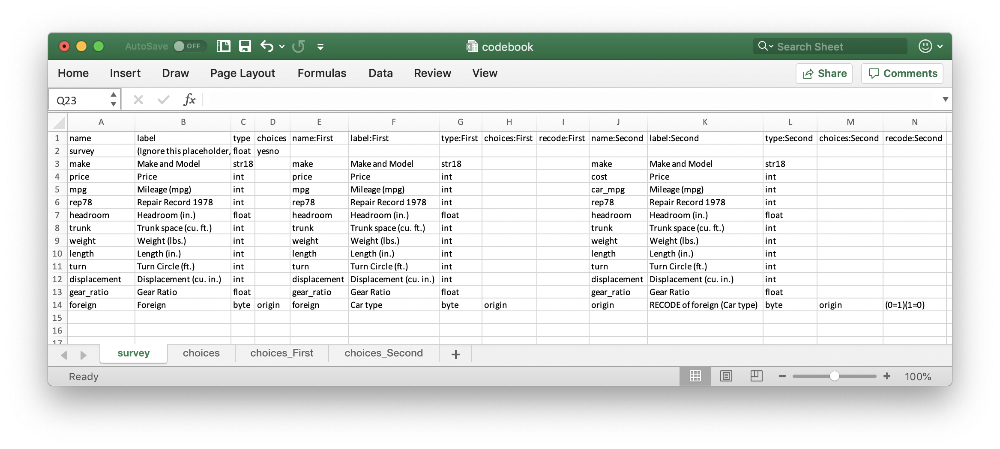
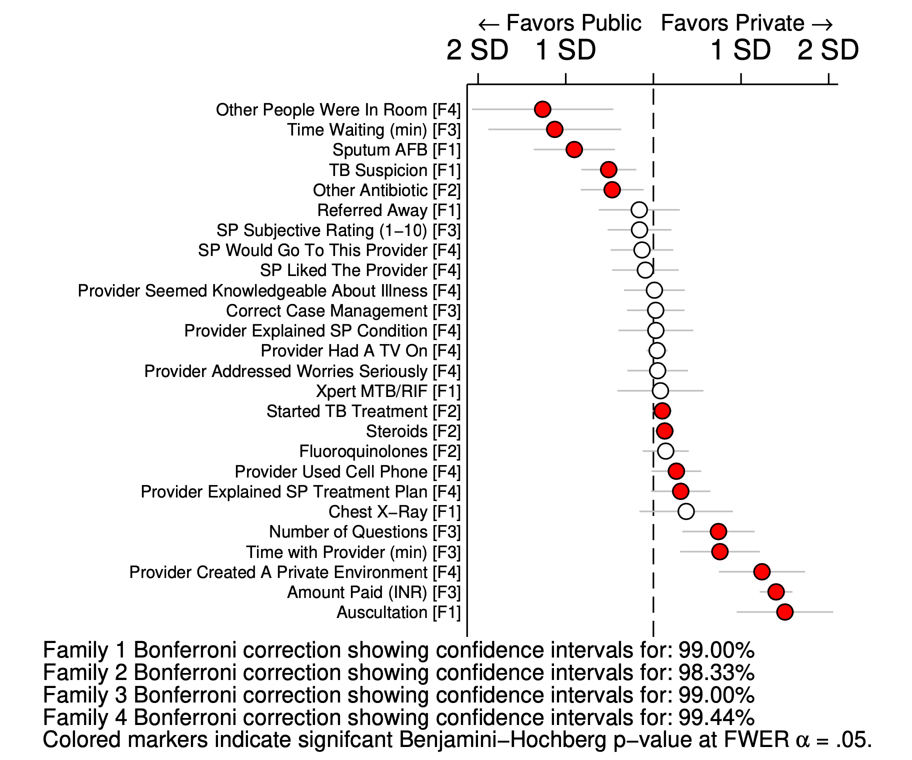
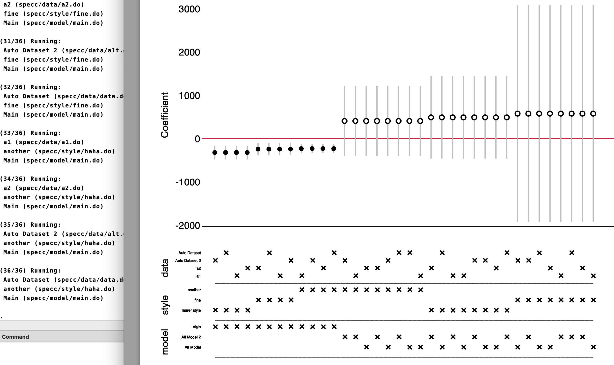

class: center, middle # Stata Commands for Process Standardization --- # Preview **Why write Stata commands?** - Thinking about standardization and improvement through code **DIME Analytics packages** - `ietoolkit` - `iefieldkit` **Ben's Stata commands** - GitHub resources - Individual commands **Discussion:** What works for Georgetown? **Disclaimer:** _Much of these thoughts and work are respectfully borrowed from the great minds of [Luiza Cardoso de Andrade](https://github.com/luizaandrade) and [Kristoffer Bjarkefur](https://github.com/kbjarkefur) from the DIME Analytics team..._ --- # Why write Stata commands? Two major components: _workflow_ standardization and _output_ standardization **Workflow standardization** - **Less code** for same result - **Same code** for same result **Output standardization** - Less code for **same result** - Same code for **same result** --- # Why write Stata commands? Two major goals: raising the _floor_ and raising the _ceiling_ **Raising the floor** New coders, even with low skills, can produce code and outputs at the expected level of quality. These kinds of code make it easy to learn fast from the code of others on the team. Good examples: folder structure, balance tables, etc. **Raising the ceiling** Cutting-edge techniques eventually need to be generalized in code so that their inputs, outputs, and processes do not need to be hard-coded every time they need to be done. Good examples: specification curves, Benjamini-Hochberg significance tests, etc. _These two goals map roughly onto the next two sections..._ --- # Why _not_ write Stata commands? Two major tradeoffs: less learning at low level and less flexibility **Less low-level learning** Students will not directly learn to build up their own matrices, verify results by hand, and print outputs to LaTeX. (On the other hand, this is a steep learning curve...) **Less flexibility** In order to build and teach these tools effectively, all PIs have to be more or less happy with the same type of basic functions. This includes some management workflows as well as some outputs as you'll see next. --- class: center, middle # DIME Analytics packages: `ietoolkit` and `iefieldkit` --- # `ietoolkit`: commands for impact evaluations **Key idea: institutional memory in code** - Collectively DIME has a lot of experience, and DIME Analytics tasks often boil down to: "generate and disseminate institutional memory" - [DIME Wiki](https://dimewiki.worldbank.org) and [our book](https://worldbank.github.io/d4di/) are important resources for institutional memory - But what if we also build institutional memory into the **code** RAs use? - This is the objective of `ietoolkit` (and `iefieldkit`) **Resources** - [Blogpost](https://blogs.worldbank.org/impactevaluations/ie-analytics-introducing-ietoolkit) - [Homepage](https://worldbank.github.io/ietoolkit/) - [GitHub](https://github.com/worldbank/ietoolkit) - [Stata Conference Presentation](https://www.stata.com/meeting/chicago19/slides/chicago19_Bjarkefur.pdf) --- # `ietoolkit` commands - `iebaltab`: Create baseline balance tables and export to LaTeX - `ieboilsave`: Make sure best practices for saving data are followed - `ieboilstart`: Make sure best practices for code initialization are followed - `ieddtab`: Estimate difference-in-difference models and export to LaTeX - `iedropone`: Make sure changes to data result in the expected change - `iefolder`: Make sure all projects follow the same folder structure - `iegitaddmd`: Utility for ensuring folder structure is git-compatible - `iegraph`: Graph common treatment-control comparisons as means - `iekdensity`: Graph common treatment-control comparisons as distributions - `iematch`: Implement matching ex-post for various scoring methods --- # Showcase: `iefolder` - This is the flagship command for the suite. It sets up the `DataWork` folder, a standardized project folder structure for reproducible research. - In addition to setting up the `DataWork` folder, iefolder creates master do-files linking to all main folders in the folder structure. - These master do-files are updated whenever more rounds, units of observations, and subfolders are added to the project folder using this command.  --- # `ietoolkit`: commands for data collection **Key idea: move human tasks out of code** - Data collection is a process that has traditionally suffered from low levels of documentation, standardization, and replicability - These commands automatically output human- _and_ machine-readable spreadsheet documentation as a functional part of the intended workflow - Example of using Stata to bring ideals of standardization and replicability to one of our core tasks that is usually considered less technical **Resources** - [Homepage](https://dimewiki.worldbank.org/iefieldkit) - [GitHub](https://github.com/worldbank/iefieldkit) - [Stata Conference Presentation](https://www.stata.com/meeting/chicago19/slides/chicago19_Daniels.pdf) --- # `ietoolkit` commands - `ietestform`: Ensures that ODK (SurveyCTO) surveys are Stata-optimized - `ieduplicates`: Finds and documents duplicate observations and resolutions - `iecompdup`: Interactive support for identifying reasons for duplicate observations - `iecodebook apply`: Reads an Excel codebook that specifies renames, recodes, variable labels, and value labels, and applies them to the current dataset. - `iecodebook append`: Reads an Excel codebook that specifies how variables should be harmonized across two or more datasets - rename, recode, variable labels, and value labels - applies the harmonization, and appends the datasets. - `iecodebook export`: Creates an Excel codebook that describes the current dataset, and optionally produces an export version of the dataset with only variables used in specified dofiles. --- # Showcase: `iecodebook` - Anyone can write thousands of `rename`, `recode`, and `label` commands. - Nobody wants to, and it is very hard to find errors later. - `iecodebook` enables this to be done for one or more datasets at a time, including making sure value labels harmonize across appending multiple rounds. - **Most importantly**, this is all done in a spreadsheet that anyone can read! In Stata, then, one line: ``` iecodebook append "survey1.dta" "survey2.dta" using "codebook.xlsx" ```  --- class: center, middle # Ben's Stata commands --- # Ben's Stata commands **Why do I write Stata commands?** - I see myself as [lazy, dumb, and successful](https://blog.codinghorror.com/how-to-be-lazy-dumb-and-successful/) - I don't want to work very hard - I am not bright enough to see how computers will handle new code - Remembering things is hard too - So I write simple, reusable code and try do document it really well **Resources** - [Blogpost](https://blogs.worldbank.org/opendata/making-analytics-reusable) - [Homepage](https://www.benjaminbdaniels.com) - [GitHub](https://github.com/bbdaniels/stata) - [Lightning Talk: What is DIME Analytics?](https://www.benjaminbdaniels.com/talks/dime-analytics/) --- # Ben's Stata commands `net from https://github.com/bbdaniels/stata/raw/master/` - `betterbar`: The bar graphs you always wanted - `sumstat `: Summary statistics with subgroups - `specc`: Specification curves automagically - `forest`: Multiple hypothesis visualization and adjustment - `dta2kml`: KML files from datasets - `outwrite`: Tables, but easier - `txt2qr`: Make arbitrary QR codes - `crossfold`: K-fold cross-validation in Stata - `knapsack`: Solve optimal allocation problems - `statflow`: Setup for sampling/attrition flow charts - `makeid`: Unique IDs that respect nesting --- # Showcase: `forest`  --- # Showcase: `specc`  --- class: center, middle # Discussion --- # These take a lot of work! **DIME Analytics code is _consumer code_** - Error messages are informative and guide a user towards correct usage - We use the code to teach standard processes to new hires - Lots of narrative documentation for every command on DIME Wiki - **These take about a year each to get to this point** **Ben's code is _not_** - You need to already know the method to use these commands, and there is not much documentation outside the helpfile - These are written between one day and one week - I promise there are functional bugs, but _no worse than if you wrote your own implementation_ - SSC is not very good at _continuous deployment_, but GitHub is _Figuring out the syntax and functional boundaries in both cases is a careful balancing process... but these investments pay off!_ **So these are all available ... what investments and standardizations do you want to make?** --- class: center, middle # Thank you!